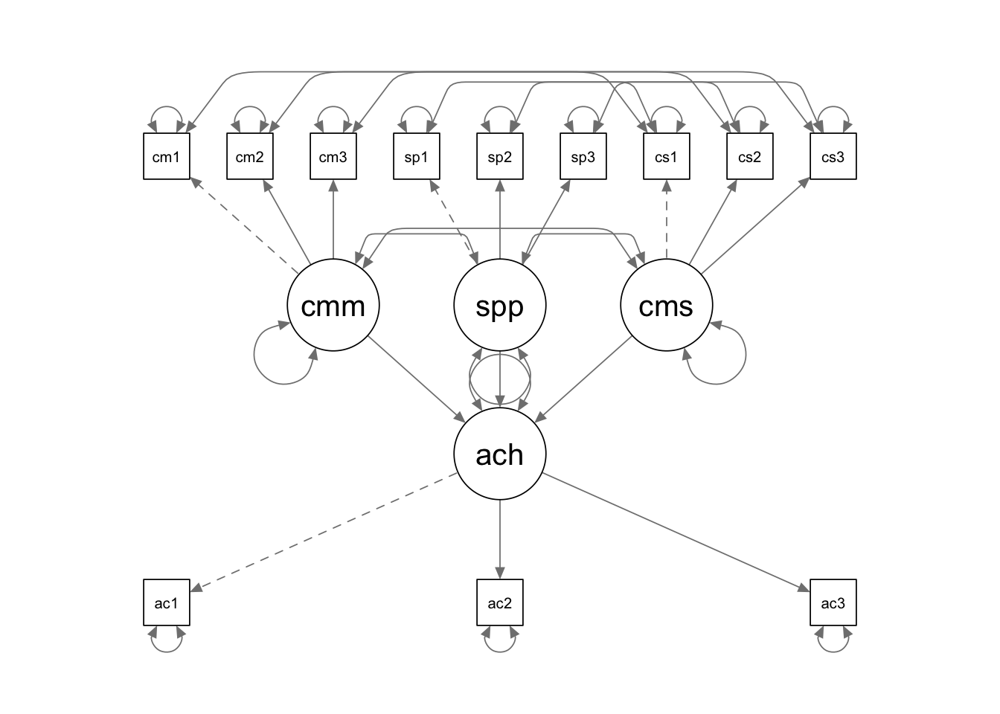
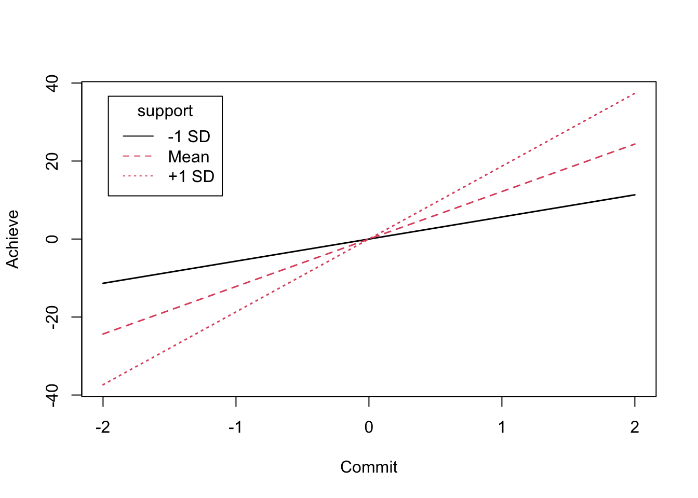

In this tutorial, we are going to use lavaan for latent
variable moderation.
library(lavaan)
library(semPlot)
library(interactions)
library(semTools)The data for this example is saved in a txt file named “interact1.txt”. This data set contains variables that have been centered properly.
setwd(mypath) # change it to the path of your own data folder
int.data <- read.delim("interact1.txt", sep = "\t", header = F)
colnames(int.data) <- c('ach1c', 'ach2c', 'ach3c', 'com1c', 'com2c', 'com3c',
'sup1c', 'sup2c', 'sup3c', 'cs1c', 'cs2c', 'cs3c')
# check the data, all centered
str(int.data)## 'data.frame': 350 obs. of 12 variables:
## $ ach1c: num 207.8 -50.2 -77.2 76.8 -118.2 ...
## $ ach2c: num 32.11 -120.89 -108.89 111.11 7.11 ...
## $ ach3c: num 140.1 -38.9 -175.9 98.1 -47.9 ...
## $ com1c: num 0.929 -0.071 -3.071 0.929 -1.071 ...
## $ com2c: num 3.017 0.017 -0.983 0.017 0.017 ...
## $ com3c: num 1.877 -0.123 -0.123 0.877 -0.123 ...
## $ sup1c: num -6.209 -4.209 0.791 8.791 -0.209 ...
## $ sup2c: num 7.734 -4.266 -1.266 5.734 -0.266 ...
## $ sup3c: num 6.963 -7.037 -1.037 -3.037 -0.037 ...
## $ cs1c : num -7.6 -1.54 -4.27 6.32 -1.62 ...
## $ cs2c : num 21.985 -1.423 -0.106 -1.252 -1.355 ...
## $ cs3c : num 11.543 -0.662 -1.399 -4.191 -1.522 ...summary(int.data)## ach1c ach2c ach3c
## Min. :-325.20 Min. :-399.8910 Min. :-328.9490
## 1st Qu.: -76.20 1st Qu.: -83.8910 1st Qu.: -82.4490
## Median : -2.70 Median : 0.6090 Median : -6.4490
## Mean : 0.00 Mean : 0.0004 Mean : -0.0004
## 3rd Qu.: 82.55 3rd Qu.: 83.8590 3rd Qu.: 81.0510
## Max. : 334.80 Max. : 321.1090 Max. : 364.0510
## com1c com2c com3c
## Min. :-7.071000 Min. :-4.983000 Min. :-6.123000
## 1st Qu.:-1.071000 1st Qu.:-0.983000 1st Qu.:-1.123000
## Median :-0.071000 Median : 0.017000 Median :-0.123000
## Mean : 0.000429 Mean :-0.000143 Mean :-0.000143
## 3rd Qu.: 0.929000 3rd Qu.: 1.017000 3rd Qu.: 1.627000
## Max. : 5.929000 Max. : 6.017000 Max. : 4.877000
## sup1c sup2c sup3c
## Min. :-10.209000 Min. :-12.266000 Min. :-10.037000
## 1st Qu.: -2.209000 1st Qu.: -2.266000 1st Qu.: -3.037000
## Median : -0.209000 Median : -0.266000 Median : -0.037000
## Mean : -0.000429 Mean : -0.000286 Mean : 0.000143
## 3rd Qu.: 2.791000 3rd Qu.: 2.734000 3rd Qu.: 2.963000
## Max. : 9.791000 Max. : 9.734000 Max. : 10.963000
## cs1c cs2c cs3c
## Min. :-26.23000 Min. :-32.32300 Min. :-26.11100
## 1st Qu.: -3.04750 1st Qu.: -3.05500 1st Qu.: -3.57100
## Median : -1.61600 Median : -1.33800 Median : -1.38650
## Mean : 0.00006 Mean : -0.00003 Mean : 0.00004
## 3rd Qu.: 3.42375 3rd Qu.: 2.44800 3rd Qu.: 2.82600
## Max. : 36.56100 Max. : 59.76800 Max. : 39.85500If you have raw data, you can easily follow the rules discussed in
class to create the centered variables in R. Or you could make use of
the indProd function within the semTools
package to conveniently create the product terms. The code below will
generate the paired product terms between the measured indicators for
parental support and academic commitment and do double mean
centering.
int.data2 <- int.data[, 1:9]
int.data2 <- indProd(int.data2, 4:6, 7:9, match = T, meanC = T, doubleMC = T)
summary(int.data2)## ach1c ach2c ach3c
## Min. :-325.20 Min. :-399.8910 Min. :-328.9490
## 1st Qu.: -76.20 1st Qu.: -83.8910 1st Qu.: -82.4490
## Median : -2.70 Median : 0.6090 Median : -6.4490
## Mean : 0.00 Mean : 0.0004 Mean : -0.0004
## 3rd Qu.: 82.55 3rd Qu.: 83.8590 3rd Qu.: 81.0510
## Max. : 334.80 Max. : 321.1090 Max. : 364.0510
## com1c com2c com3c
## Min. :-7.071000 Min. :-4.983000 Min. :-6.123000
## 1st Qu.:-1.071000 1st Qu.:-0.983000 1st Qu.:-1.123000
## Median :-0.071000 Median : 0.017000 Median :-0.123000
## Mean : 0.000429 Mean :-0.000143 Mean :-0.000143
## 3rd Qu.: 0.929000 3rd Qu.: 1.017000 3rd Qu.: 1.627000
## Max. : 5.929000 Max. : 6.017000 Max. : 4.877000
## sup1c sup2c sup3c
## Min. :-10.209000 Min. :-12.266000 Min. :-10.037000
## 1st Qu.: -2.209000 1st Qu.: -2.266000 1st Qu.: -3.037000
## Median : -0.209000 Median : -0.266000 Median : -0.037000
## Mean : -0.000429 Mean : -0.000286 Mean : 0.000143
## 3rd Qu.: 2.791000 3rd Qu.: 2.734000 3rd Qu.: 2.963000
## Max. : 9.791000 Max. : 9.734000 Max. : 10.963000
## com1c.sup1c com2c.sup2c com3c.sup3c
## Min. :-26.230 Min. :-32.323 Min. :-26.111
## 1st Qu.: -3.047 1st Qu.: -3.055 1st Qu.: -3.571
## Median : -1.616 Median : -1.338 Median : -1.387
## Mean : 0.000 Mean : 0.000 Mean : 0.000
## 3rd Qu.: 3.424 3rd Qu.: 2.448 3rd Qu.: 2.826
## Max. : 36.561 Max. : 59.768 Max. : 39.855
Suppose we are using the data with the properly centered indicators and paired product terms.
int.model <- '
commit =~ com1c + com2c + com3c
support =~ sup1c + sup2c + sup3c
comsup =~ cs1c + cs2c + cs3c
achieve =~ ach1c + ach2c + ach3c
cs1c ~~ com1c + sup1c
cs2c ~~ com2c + sup2c
cs3c ~~ com3c + sup3c
commit ~~ commit
support ~~ support
comsup ~~ comsup
achieve ~ commit + support + comsup
'
int.fit <- sem(int.model, int.data, estimator = "MLM") # request robust standard errors
summary(int.fit, fit.measures = T, standardized = F)## lavaan 0.6.15 ended normally after 262 iterations
##
## Estimator ML
## Optimization method NLMINB
## Number of model parameters 36
##
## Number of observations 350
##
## Model Test User Model:
## Standard Scaled
## Test Statistic 33.048 32.650
## Degrees of freedom 42 42
## P-value (Chi-square) 0.837 0.849
## Scaling correction factor 1.012
## Satorra-Bentler correction
##
## Model Test Baseline Model:
##
## Test statistic 1192.947 786.464
## Degrees of freedom 66 66
## P-value 0.000 0.000
## Scaling correction factor 1.517
##
## User Model versus Baseline Model:
##
## Comparative Fit Index (CFI) 1.000 1.000
## Tucker-Lewis Index (TLI) 1.012 1.020
##
## Robust Comparative Fit Index (CFI) 1.000
## Robust Tucker-Lewis Index (TLI) 1.014
##
## Loglikelihood and Information Criteria:
##
## Loglikelihood user model (H0) -14828.416 -14828.416
## Loglikelihood unrestricted model (H1) -14811.892 -14811.892
##
## Akaike (AIC) 29728.831 29728.831
## Bayesian (BIC) 29867.717 29867.717
## Sample-size adjusted Bayesian (SABIC) 29753.512 29753.512
##
## Root Mean Square Error of Approximation:
##
## RMSEA 0.000 0.000
## 90 Percent confidence interval - lower 0.000 0.000
## 90 Percent confidence interval - upper 0.022 0.021
## P-value H_0: RMSEA <= 0.050 1.000 1.000
## P-value H_0: RMSEA >= 0.080 0.000 0.000
##
## Robust RMSEA 0.000
## 90 Percent confidence interval - lower 0.000
## 90 Percent confidence interval - upper 0.021
## P-value H_0: Robust RMSEA <= 0.050 1.000
## P-value H_0: Robust RMSEA >= 0.080 0.000
##
## Standardized Root Mean Square Residual:
##
## SRMR 0.026 0.026
##
## Parameter Estimates:
##
## Standard errors Robust.sem
## Information Expected
## Information saturated (h1) model Structured
##
## Latent Variables:
## Estimate Std.Err z-value P(>|z|)
## commit =~
## com1c 1.000
## com2c 0.898 0.057 15.735 0.000
## com3c 0.950 0.058 16.366 0.000
## support =~
## sup1c 1.000
## sup2c 0.991 0.163 6.089 0.000
## sup3c 1.088 0.189 5.743 0.000
## comsup =~
## cs1c 1.000
## cs2c 1.347 0.399 3.375 0.001
## cs3c 1.414 0.465 3.041 0.002
## achieve =~
## ach1c 1.000
## ach2c 0.964 0.068 14.242 0.000
## ach3c 1.108 0.071 15.578 0.000
##
## Regressions:
## Estimate Std.Err z-value P(>|z|)
## achieve ~
## commit 12.176 3.698 3.293 0.001
## support 19.670 4.350 4.521 0.000
## comsup 3.049 2.062 1.479 0.139
##
## Covariances:
## Estimate Std.Err z-value P(>|z|)
## .com1c ~~
## .cs1c 0.354 0.830 0.427 0.670
## .sup1c ~~
## .cs1c -0.028 2.208 -0.013 0.990
## .com2c ~~
## .cs2c -0.433 0.833 -0.520 0.603
## .sup2c ~~
## .cs2c -1.730 2.351 -0.736 0.462
## .com3c ~~
## .cs3c -0.985 0.756 -1.303 0.193
## .sup3c ~~
## .cs3c 1.022 2.057 0.497 0.619
## commit ~~
## support 1.643 0.354 4.637 0.000
## comsup -0.323 0.816 -0.396 0.692
## support ~~
## comsup -0.281 1.380 -0.204 0.839
##
## Variances:
## Estimate Std.Err z-value P(>|z|)
## commit 3.327 0.366 9.082 0.000
## support 4.550 1.109 4.104 0.000
## comsup 12.613 6.006 2.100 0.036
## .com1c 1.513 0.185 8.196 0.000
## .com2c 1.685 0.171 9.842 0.000
## .com3c 1.462 0.175 8.358 0.000
## .sup1c 11.353 1.110 10.232 0.000
## .sup2c 10.654 0.984 10.832 0.000
## .sup3c 9.790 1.138 8.601 0.000
## .cs1c 56.231 6.714 8.375 0.000
## .cs2c 55.060 10.096 5.454 0.000
## .cs3c 42.765 9.324 4.586 0.000
## .ach1c 5803.839 543.788 10.673 0.000
## .ach2c 5585.438 595.701 9.376 0.000
## .ach3c 3479.527 505.482 6.884 0.000
## .achieve 4620.687 684.439 6.751 0.000The interaction term is not statistically significant in this example. But for illustration purpose, let’s try an interaction plot which shows the simple slopes. The interaction plot can be useful to visualize your results if a significant interaction has been detected.
You can make use of the probe2WayMC and
plotProbe function available within the
semTools package to visualize the simple slopes.
(prob1 <- probe2WayMC(int.fit, nameX = c("commit", "support", "comsup"), nameY = "achieve",
modVar = "support", valProbe = c(-1*sqrt(4.550), 0, 1*sqrt(4.550))))## $SimpleIntcept
## NULL
##
## $SimpleSlope
## support est se z pvalue
## 1 -2.133 5.673 6.162 0.921 0.357
## 2 0.000 12.176 3.698 3.293 0.001
## 3 2.133 18.680 5.299 3.525 0.000(prob2 <- probe2WayMC(int.fit, nameX = c("commit", "support", "comsup"), nameY = "achieve",
modVar = "support", valProbe = c(-1, 0, 1)))## $SimpleIntcept
## NULL
##
## $SimpleSlope
## support est se z pvalue
## 1 -1 9.127 4.499 2.029 0.043
## 2 0 12.176 3.698 3.293 0.001
## 3 1 15.225 3.951 3.853 0.000plotProbe(prob1, xlim = c(-2, 2), xlab = "Commit", ylab = "Achieve", legendArgs = list(legend = c("-1 SD", "Mean", "+1 SD")))